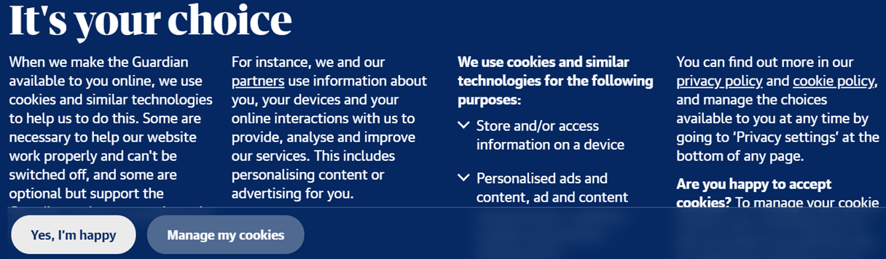

Chapter 8. The Attention Economy
Learning objective
This week’s discussion is around the concept of the attention economy, which is fundamentally distinct from the information economy (but not entirely separated from it) because it is an economy where information tends to be free.
If information is free, then what are the commodities that are produced, owned and sold in this new market?
We will also explore one of the corollaries of this new economy, which is a heightened capacity for the surveillance of individuals and the resulting threat to privacy.
From information scarcity to attention scarcity
If we think about a market system, what is within this system that contains value? That which is valuable to consumers. And, how is the value of something calculated? By demand. A product which is in high demand is generally more difficult to keep “on the shelves” or in-stock. If a product is highly sought-after, it becomes purchased; if purchased often enough, the product becomes scarce; if something becomes scarce (or rare), the purchasing cost is likely to go up. Rare items within a market system are expensive; commonly found items, or items in overabundance, are cheaper.
How does this relate to an information economy? Certainly, information is not scarce in this context. As Simon (1971) states:
“[I]n an information-rich world, the wealth of information means a dearth of something else: a scarcity of whatever it is that information consumes. What information consumes is rather obvious: it consumes the attention of its recipients. Hence a wealth of information creates a poverty of attention and a need to allocate that attention efficiently among the overabundance of information sources that might consume it.”
In an information economy, in which we are an informatic personhood (Lee, 2021), our attention is the means by which we “pay” for information services. Our attention is paid through our time and energy spent investing in an information economy. For example, scrolling through TikTok videos for hours is a way you “spend” your attention in this economical context. Your attention is the rare, scarce item within the information economy; there is a limited amount of it to go around (i.e., split between work, sleeping, eating, showering, etc.). Due to this fact, competitors within the information economy will try different tactics to grab hold of your attention. Notifications or pop-ups are ways in which a competitor tries to “bid” for your attention. As soon as you divert away from one information context, such as TikTok, to another, such as Instagram, that information economy has successfully “purchased” your attention. Different social media platforms have invested in various ways to hold onto your attention once they have initially grabbed it; for example, Facebook now automatically plays videos on your News Feed, instead of you having to push “play” each time.
Watch the following video, “The Attention Economy: How They Addict Us,” here:
Do you think there is a way to “escape” the attention economy? Do you think, between the choices of opting out of the system entirely or figuring out how to reshape the current system, one is more realistic or desirable than the other? Why or why not?
Information wants to be free
When Encyclopedia Britannica went online, its publisher decided to offer its content for free. “It’s the new business paradigm,” says an executive at the company, “information wants to be free”:
“Basically we are a content company and we believe we should deliver in whatever form users need it. We made it free because we felt it was the only way to get the critical mass of people visiting the site that we need to make money from sponsorship and e-commerce.” (Fischer, 2008)
When a user consumes information for free, the way in which a company makes money is from advertisements. However, users often do not enjoy being bombarded with advertisements when browsing an information resource. Advertisements may even deflect or deter a user from continuing to invest/spend their attention resources within a certain context. This may lead users to “purchase” the “free” (I.e., paying for a premium YouTube account with no advertisements, versus using YouTube for free with advertisements). What strategies can be used by companies to “sell” what is otherwise freely available?
How to “sell” the free
According to Kelly (2008), there are several strategies that we or a company can employ to “sell” free information in an attention economy:
Immediacy – getting the information you want, when you want it; having no need to wait around to access the freely available information (I.e., paying a bit extra to see a movie in theatres versus waiting for it to be freely accessible on a streaming media provider, like Kanopy or Hoopla provided by Halifax Public Libraries).
Personalization – a personalized copy of an information resource, which motivates the user to pay for what would otherwise be free.
Interpretation – providing a paid service (like technical assistance) for free software or instructional information (I.e., technical support provided by TELUS will charge you money to speak to a representative over the phone, whereas the same information online can be found for free).
Authenticity – paying for the “authentic” version of a software/information that is “tried and true” (I.e., paying for the authentic version of a Taylor Swift recording via a Spotify subscription versus downloading the song freely [illegally] at a potentially lower quality).
Accessibility – paying for backups and storage of online information (i.e., iCloud).
Embodiment – paying for the experience of being in an information setting with other “users” (I.e., paying to see multiple bands perform at a music festival versus watching a recording of those performances online)
Patronage – paying a fee to support your favourite authors/artists/creators; those within a “fandom” will opt to support the creation of their favourite works, so long as it is easy to do so.
Findability – information that is free may sometimes be more difficult and time-consuming to find.
What strategies are/could be used by libraries to “sell” the free?
Selling attention or selling data
“Today, information II [information generated by users of the Web 2.0] is completely commodified, it is virtually inaccessible to anyone except new media companies, who have the legal and technological means to render massive quantities of information II into commodities.” (Fischer, 2008)
“Information II” is transactional information: the information about the transactions that we make and our other activities on the web, which informs third parties about our socio-demographic characteristics and the details of our everyday lives, as opposed to “Information I” that we consume and informs us. In an attention economy, when everything is free, you are the product. By choosing to spend or allocate our attention to one resource over another, this is how we volunteer to be and exist within an attention economy platform. The ways in which we browse, search, stream, or select media become data that is generated about us, commodified, and sold. Companies use strategies for attention-grabbing, such as some of those we discussed in Section 8.4. Advertisers watch online habits to better provide more streamlined advertisements to best suit your attention-driven needs.
Watch the following TEDTalk by Tristan Harris on “How a handful of tech companies control billions of minds every day” here:
Privacy and consent
Organizations need our consent to collect data about us. How do they get us to consent? Through strategies of digital resignation (Draper & Turow, 2019). Digital resignation refers to the phenomenon in which individuals feel that attempts to control the amount and type of information collected about them digitally are futile. There is a discrepancy between people’s attitudes and behavior around privacy, namely, people say that privacy is important to them, but act in a way that is contrary to that belief (Kokolakis, 2017). This sense of futility has been cultivated, specifically in corporate spaces, to make individuals see “corporate power as an inevitable and immovable feature of contemporary life.” (Draper & Turow, 2019)

Above is an example of a company employing digital resignation. While the language suggests that this is an opportunity for the reader to make their own choice, the amount of text, language, and design contribute to making this overly complicated, prompting users to just click through quickly to get past the jargon.
What choices are being made in the above image that could result in digital resignation? How would you design an alternative to support authentic consent?
Even though you are providing small amounts of information across different platforms, computers will generate extremely precise data about you by bringing the data all together. Computers can amplify but also distort our data… can we trust in these processes?
Trust in the machine?
Over time, platforms can collect thousands of data points for a single user and compile this information into a kind of profile that can be used in recommendation algorithms that push content to users. The goal of platforms is to get users to remain online, viewing content (and ads) for as long as possible. Therefore, the recommendation algorithms are key in accurately predicting what a person might like to see, and therefore, keeping them engaged on the platform. TikTok, which is increasingly popular, specifically with young people, has employed an unprecedented centring of algorithmically driven feeds in the For You page (Bhandari & Bimo, 2022).
While these algorithms do succeed in predicting the content a user would like to see, and keep them engaged on the platform, this can lead to untruthful and unreliable content being boosted, if the algorithm predicts that it has a large enough audience. AI has been shown to display a lack of fairness, and reinforce stereotypes of specific gender, racial, and cultural groups (Panch et al., 2019). In the United States, politicians have identified social media algorithms as a major contributor to the spread of misinformation that culminated in the January 6th insurrection (Morrison, 2021).
Watch the following Crash Course video on “Algorithmic Bias and Fairness” here:
In what ways do you think it’s good to collect large amounts of information about people?
Surveillance and organization
Routine surveillance is required for effective organization:
“To organize life information must be systematically gathered on people and their activities. We must know about people if we are to arrange social life: what they buy, and when and where; how much energy they require, where and at what times; how many people there are in a given area, of what gender, age and state of health; what tastes, lifestyles and spending capacities given sectors of the populations enjoy.” (Webster, 2014)
Government organizations, like Statistics Canada collect data that can help decision makers in evidence-based practice. Companies also collect data to improve customer experiences and address negative experiences. Without data collection, we would be unable to make decisions based on empirical information and would only be relying on opinions and preferences. All this is to say, data collection results in enhancements in our daily life, productivity and happiness. We can make more informed decisions if we have access to data.
Heightened reflexivity
“Modernity being a matter of increased choices made at every level necessitates heightened reflexivity, [which requires] increased surveillance so that we may develop knowledge upon which may be made choices about ourselves and the sort of society we want.” (Webster, 2014)
In addition to the larger decisions discussed in Section 8.8, data can support us in reflexive thought. An athlete looking to improve their marathon time could rely on data from their smartwatch to gain an understanding of their fitness and their training. A library director could review circulation numbers to help them determine what books/movies/resources their patrons enjoy the most, and what they should aim to buy more of, and weed in the future. This data can help us add value to our own lives, and the organizations we work for.
What data do you intentionally collect and analyze (screentime, step count, etc.)? Do you feel this helps bring you closer to your personal goals?
Case study
An outbreak has sent countries across the globe into lockdown. Jude works at the Nova Scotia Archives, and they have directed their employees to work from home in accordance with provincial regulations. Jude initially finds a stable routine helpful; he wakes up in the morning, takes his dog Kevin on a walk, and then begins his workday. As the months go by, Jude finds himself consuming more and more online content instead of doing the things he regularly enjoys. Jude begins to immerse himself heavily in the perspectives of certain online forums and media. The gang grows concerned with Jude’s online behaviours and collectively check in with him in their group chat.
Info Masters: Group Chat
3:07am
In_perpe_jude_ity87: Hey friends, check out this YouTube video when you get a chance- really interesting perspective… not something you’ll hear on the mainstream media.
9:45am
Trace_2_face_consultation: Good morning Jude, et al. I see you were up really late Jude, were you just watching videos all night?
Dantes_infern0: Rise and shine team! Let’s manage information 😊
tWrending_in_tech: Good morn!! Hmm… I saw this the other day when it was floating around the internet… but only cause I’ve got to keep my finger on the pulse of the web and not because it’s content I usually watch… where did you find this, Jude?
In_perpe_jude_ity87: Haha, yeah, I was up pretty late. I just kinda fell down a rabbit hole in this online forum I’m a part of and next thing I knew it was 3am. Gotta stop doing that! Let me know what you think about the video.
Trace_2_face_consultation: Oh dear- Jude, it sounds like nights like that have become the norm? That doesn’t seem like a very healthy lifestyle. Why are you up so late every night?
Dantes_infern0: From the activity logs I can view on the social sites we’re all a part of you seem pretty active on a few different pages and groups. Take a break, my Jude!
In_perpe_jude_ity87: I don’t need a break. I’m just really curious and interested in learning about viewpoints I’ve never been exposed to. I’ve been finding so much new information from videos and articles shared in these groups.
tWrending_in_tech: Awe, Jude- we’ve always loved your love of analog formats! So, this comes as a bit of a surprise. It seems like your attention has been captivated by these groups- just based on what I see you reposting and chatting about! (Please don’t be mad, just checking in- ily)
Trace_2_face_consultation: Well said, Wren! I remember when I first got a few online platforms- I couldn’t tear myself away! There was always new and exciting information out there and everything always felt so urgent. I was afraid to log off and miss new content.
Dantes_infern0: Hahaha- when I first got Facebook, I remember joining so many groups dedicated to raising tropical fish. I got REALLY into it, but after a while, I realized the algorithm was designed to show me things I liked and interacted with. It kind of becomes a positive feedback loop. I’m still leaving fish groups, and that was 5 years ago. I also purchased a fair few fish tanks- dang targeted ads!
tWrending_in_tech: Hilarious, because I’ve never seen you keep a plant alive for more than a week. Dante’s inferno indeed. Jude, as someone who works in tech, could I kindly suggest that you be careful about where you are investing your attention and time? Some online sites and apps are designed to capture and monetize your attention and aren’t necessarily concerned with the well-being of users… they’re more interested in generating traffic on their sites.
In_perpe_jude_ity87: No one is forcing me to be active on these groups though… the algorithm is working because I’m genuinely interested in this stuff. It’s free, too! The users are the ones creating all the content. I appreciate your concern, but I think I just get really into stuff, like the time I got back into baking sourdough bread at the start of the outbreak LOL.
Trace_2_face_consultation: Thanks for that perspective, Wren! It is so easy to feel like we are in control because we are the ones clicking, but many online business models are designed to keep us on their sites. Our attention is a resource and should be protected and treated as such! Remember our Professor in Info in Society in first year telling us “If it’s free, you are the product”? It seems like the information you are finding is a valuable asset here but in reality, the data we provide is more valuable to these companies than the information we obtain from them… at least monetarily. And I understand that, Jude. You are someone who is wholeheartedly invested in what you care about, and that is such a wonderful characteristic of yours! But often our strengths and weaknesses go hand in hand- there is no harm in baking bread, but the viewpoints and content you are consuming so much of can potentially be a bit dangerous, in insidious ways.
Dantes_infern0: I saw a documentary about this recently! These sites are gathering and selling our data. They want users on their sites as long as possible to offer up more of their personal information. They track user behaviours so that they have more generated data to sell. It’s a cycle. Some people get in the habit of consuming information non-stop and don’t realize what they are offering in exchange for it.
tWrending_in_tech: Agreed! That’s why I cap my screen time now and only go on my social sites intentionally and with premeditated purpose. Otherwise, I just scroll endlessly!
In_perpe_jude_ity87: I’m surprised by your reactions. I just shared a video I thought was interesting and didn’t mean to cause an entire discourse on the commodification of our attention… talk about diverting attention away from the main point.
tWrending_in_tech: We just want to make sure you are okay, Jude! With so much information and online content being created non-stop, the only limiting factor is really our attention. I have learned to be more mindful since working in tech. As someone with the inside scoop when it comes to algorithms, they have the potential to create and reinforce stereotypes, biases, and oppression. It’s our social responsibility to be cognizant of that fact and question what we are consuming and why. That’s just one techie’s opinion!
In_perpe_jude_ity87: Well, thanks for your concern, folks. I’ll take your advice and log off- I’ve got to get back to work. The fonds won’t fawn over themselves, haha. Ttyl!
Trace_2_face_consultation: Thanks for the morning chat, all! Glad we got to check in with you, Jude!
Dantes_infern0: Yeah- this convo has made me consider public libraries’ roles in protecting patrons’ privacy and not revealing what resources are used and by whom. I’m going to go see what books we carry on these topics.
tWrending_in_tech: And I’ll get back to my big evil tech company! Bahaha >:) jk. Have a lovely day all!
Chat ended.
Consider the themes discussed in the group chat. The gang observes that Jude’s attention has been monopolized by online groups sharing distinct points of view. They raise concerns over Jude’s level of awareness regarding the commodification of user attention and urge him to be mindful of this fact as he navigates online landscapes.
Discussion Questions
Would you consider Jude’s online behaviours healthy?
Consider how Jude exists as a user in online settings: do you think he feels/is in control? Do you feel as though he possesses a level of awareness regarding the time he is spending online and the ways in which he is interacting with content?
Do you feel as though you have a level of agency over the information you provide online? When you offer up your data to online sites, does it transform from personal information into a commodity? How do you perceive personal versus collective versus organizational ownership of data online? Is this based on how it was created/generated, or by whom?
Is our data inherently of value? How is value added to the data we generate digitally?
To what degree are you informed about the ways online sites use your information? Is it important to you to be aware of how your attention is captured and commodified? In what ways can we facilitate greater awareness surrounding the attention economy in ourselves and in others?
How do we ensure equitable access to information in an ethical way?
What are the implications of the attention economy for information access, quantity, quality, and behaviour?
How do the phenomena discussed in this chapter apply to individuals or collectives that are not necessarily or directly generating revenues out of the attention and information about others?